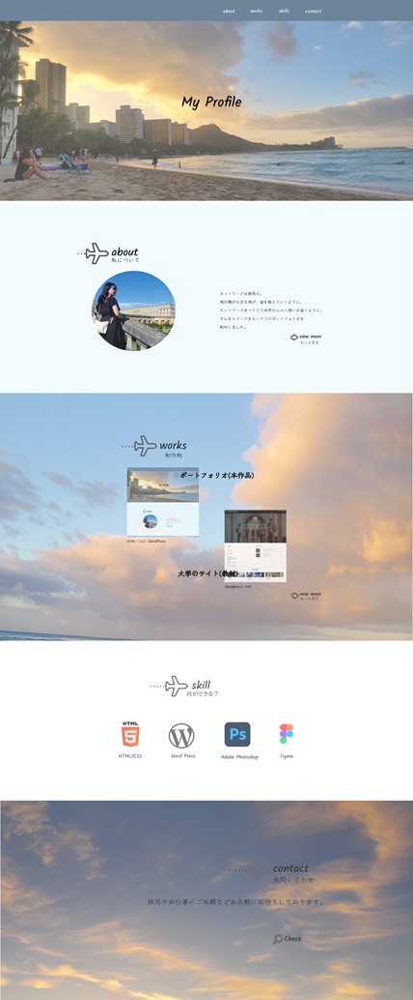
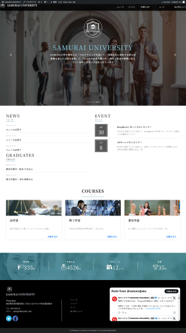

ポートフォリオ(本作品)

- 制作期間
- ○週間
- ターゲット
- 採用担当者
- 目的
- 就職活動を行うにあたり自分の紹介と制作した作品を伝えるため
- デザイン
-
空と海をイメージし、爽やかで落ち着きのあるデザインにしました。 各ページの背景色は写真の色味を主役に考え配色しました。
空と海は色がはっきりしているのでぼやかすことで、背景に馴染むように意識しました。
aboutをページの上部に配置し自身の紹介が印象に残るようにしました。
worksは自身の紹介の次に知ってほしい内容としてaboutの次に配置しました。
skillは使用言語のアイコンを用いることで一目で分かるように工夫しました。
contactはトップページをシンプルに表現しクリックした先のページで詳細が閲覧できるようにしました。 - ☆背景写真には、実際に訪れた各地で撮影した写真を使用しております。
- ポイント
-
タイトルの飛行機マークは各セクションごとに位置をずらすことで、
進行方向に飛行機が進んでいるようにみせております。 また飛行機の後ろに続いている・は飛行機雲をイメージしており各
セクションが変わるににつれて・の数を増やすことで前に進んでる
ようにみせるために工夫をしております。 - 使用ツール
- Wordpress・Visual studio code
大学のサイト(教材)

- 制作期間
- 10日間
- 目的
- WordPress化することで簡単に更新できる。
- 課題
- 大学担当者がコーディングなしで簡単にコンテンツを更新できるようにしたい。
- 苦労した点
- 始めてWordPressを使用したので、制作期間が短い中で、WordPressにテーマを認識させ
HTMLとCSSを併用しながら編集したこと。- ☆背景写真には、実際に訪れた各地で撮影した写真を使用しております。
- ポイント
-
タイトルの飛行機マークは各セクションごとに位置をずらすことで、
進行方向に飛行機が進んでいるようにみせております。 また飛行機の後ろに続いている・は飛行機雲をイメージしており各
セクションが変わるににつれて・の数を増やすことで前に進んでる
ようにみせるために工夫をしております。 - 使用ツール
- Wordpress・Visual studio code